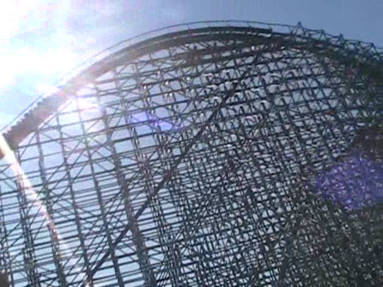
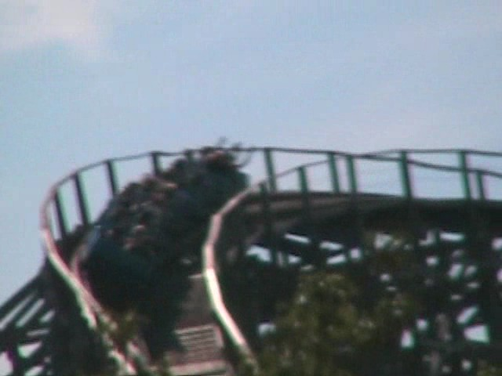
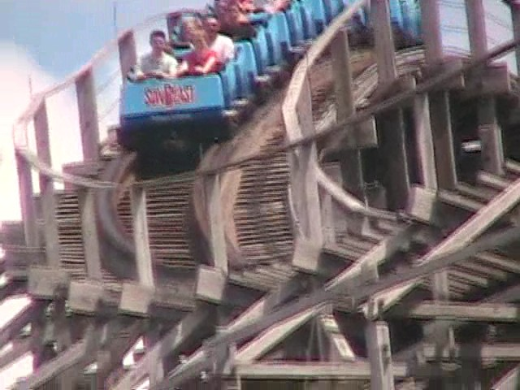
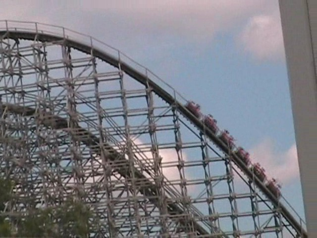
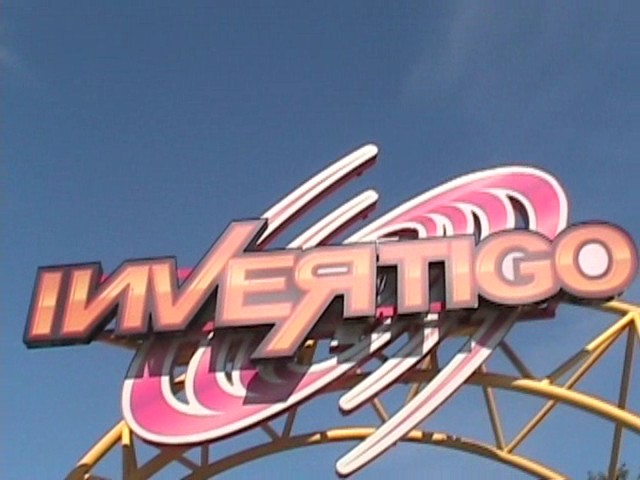
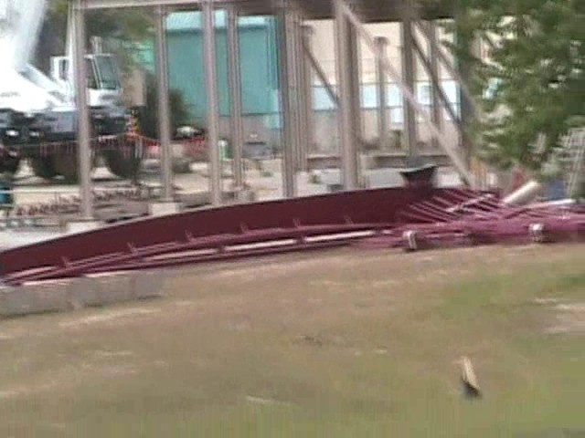
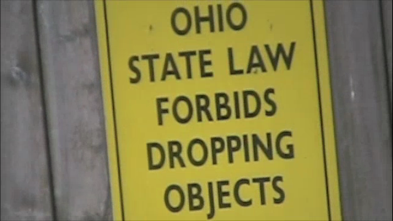
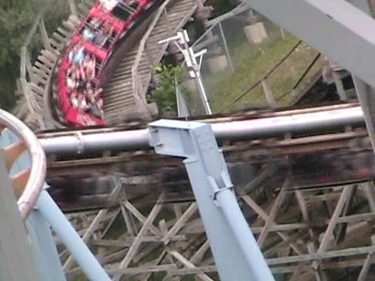
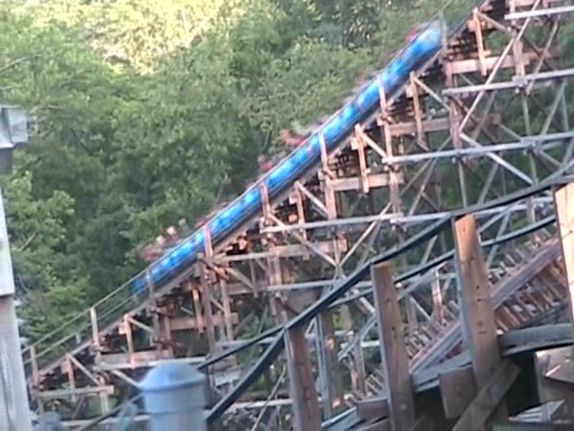

North of the Border Tour
Great Escape La Ronde Canadas Wonderland Michigans Adventure Six Flags Great America Kings Island Kennywood Knoebels Dorney Park
Nearby was Holiday World. Home of the best wooden coaster in the world.
However, we decided to f**k that and go to Kings Island instead.
 Which is home to the most pointless wooden coaster in the world.
Which is home to the most pointless wooden coaster in the world.

So much wasted wood.

This is just spirla #4,578 on Son of Beast.

Get ready for alot of dissapointment.

On the positive side, it's alot better than Wild Beast.
Next up is Top Gun.
These people are about to enjoy their wonderful ride on Top Gun.
]
Is it me, or does Top Gun seem like a clone of Vortex?

OMG! We traveled back to California and are @ CGA!!!!
 HA HA!!! You got punked once again bitches!
HA HA!!! You got punked once again bitches!
 However, I had more fun on this Invertigo due to Tracy screaming.
However, I had more fun on this Invertigo due to Tracy screaming.
 Adventure Express was a pretty meh mine train. Nothing special. But there's much worse out there.
Adventure Express was a pretty meh mine train. Nothing special. But there's much worse out there.
All right!!! To kick some asses in Coaster Racing.
 If you are reading this, please start playing "We are the Champions" by Queen, grab a glass of champane, and help us celebrate our winning of the coaster race on Racer.
If you are reading this, please start playing "We are the Champions" by Queen, grab a glass of champane, and help us celebrate our winning of the coaster race on Racer.
 So X-Flight, you thought you could escape my wrath by fleeing from Geauga Lake?
So X-Flight, you thought you could escape my wrath by fleeing from Geauga Lake?
X-Flight, your escape plans have failed and I have got the credit!
This is much better than Superman Ultamite Flight.
Originally, I was planning on another punking claiming that we went to outer space, then I thought that two punkings in one update is just cruel.
Flight of Fear is awsome.
That really has airtime right there.
 This is better than Viper.
This is better than Viper.
 Vortex Loopiness.
Vortex Loopiness.
 After knowing how awsome Backlot Stunt Coaster is in Canada, we had to ride it here.
After knowing how awsome Backlot Stunt Coaster is in Canada, we had to ride it here.
 However, Backlot Stunt Coaster just isn't as good here.
However, Backlot Stunt Coaster just isn't as good here.
The one in Canada is better because the Canadian Version includes FIRE!!!!!"
 Ladies and Gentelmen, we of Incrediblecoasters are proud to bring you Diamondback Construction Photos!
Ladies and Gentelmen, we of Incrediblecoasters are proud to bring you Diamondback Construction Photos!
 I have no idea what this is for.
I have no idea what this is for.

If you have a rollercoaster construction fetish, you better take a look at your pants.
 Unlike Son of Beast, the Beast is actually fun.
Unlike Son of Beast, the Beast is actually fun.
If only I could've ridden it at night. (Stupid Kings Island closing at 8:00)
Lack of theming and painful sudden jolts make Crypt the worst Top Spin ever.
Time for the credit whoring to begin.
 Here's another Kiddy SLC I got to ride.
Here's another Kiddy SLC I got to ride.
Hey Spencer. How's it going?
 Suprisingly, this was the best kiddy woodie on the trip.
Suprisingly, this was the best kiddy woodie on the trip.
Oh Dear, this is not happening.
You Filthy FILTHY credit whores!
Is it really worth it?
 "Hey Scooby, What are you doing?" "Oh nothing. Just choking credit whores."
"Hey Scooby, What are you doing?" "Oh nothing. Just choking credit whores."
Last year, MaXair was awsome, and this year, Delarium is also awsome.

Ohio State Law forbids Drop Towers from all theme parks.
 Luckily, Kings Island has a Drop Zone instead. So it's safe.
Luckily, Kings Island has a Drop Zone instead. So it's safe.
Drop Zone is amazing.

Son of Beast VS Top Gun. FIGHT!!!

Son of Beast isn't that bad. You just feel vibrations in your chest. It's no diffrent than being near the stereo at a school dance.
And overall, I had a great time at Kings Island. Next stop, Kennywood.
Kennywood
Home